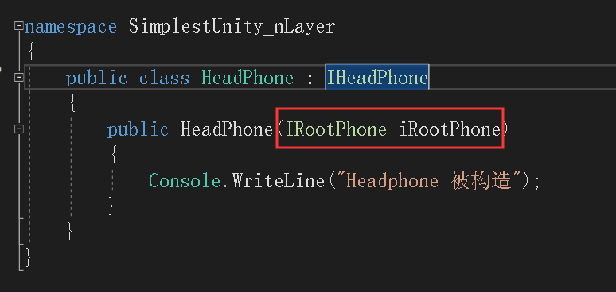

这个场景跟《手写Unity容器--第一层依赖注入》又不同，这里构造AndroidPhone的时候，AndroidPhone依赖于1个IPad，且依赖于1个IHeadPhone，而HeadPhone又依赖于1个IRootPhone

1、IPhone接口
namespace SimplestUnity_nLayer
{
interface IPhone
{
void Call();
}
}2、AndroidPhone实现
namespace SimplestUnity_nLayer
{
public class AndroidPhone : IPhone
{
public AndroidPhone(IPad iPad, IHeadPhone iHeadPhone)
{
Console.WriteLine("{0}构造函数", this.GetType().Name);
}
}
}3、IPad接口
namespace SimplestUnity_nLayer
{
public interface IPad
{
void Show();
}
}4、IPad实现
namespace SimplestUnity_nLayer
{
public class AndroidPad:IPad
{
public AndroidPad()
{
Console.WriteLine("{0}构造函数", this.GetType().Name);
}
public void Show()
{
Console.WriteLine("看{0}", this.GetType().Name);
}
}
}5、IHeadPhone接口
namespace SimplestUnity_nLayer
{
public interface IHeadPhone
{
}
}6、IHeadPhone实现
namespace SimplestUnity_nLayer
{
public class HeadPhone : IHeadPhone
{
public HeadPhone(IRootPhone iRootPhone)
{
Console.WriteLine("Headphone 被构造");
}
}
}7、IRootPhone接口
namespace SimplestUnity_nLayer
{
public interface IRootPhone
{
}
}8、IRootPhone实现
namespace SimplestUnity_nLayer
{
public class RootPhone : IRootPhone
{
public RootPhone()
{
Console.WriteLine("RootPhone 被构造");
}
}
}9、容器--接口
public interface IDavidContainer
{
void RegisterType<TFrom, TTo>();
T Resolve<T>();
}10、容器--实现
namespace SimplestUnity_nLayer
{
/// <summary>
/// 容器--工厂
/// </summary>
public class DaivdContainer:IDaivdContainer
{
private Dictionary<string, Type> containerDictionary = new Dictionary<string, Type>();//字典
/// <summary>
/// 注册类型
/// </summary>
/// <typeparam name="TFrom"></typeparam>
/// <typeparam name="TTo"></typeparam>
public void RegisterType<TFrom, TTo>()
{
containerDictionary.Add(typeof(TFrom).FullName, typeof(TTo));
}
/// <summary>
/// 获取实例
/// </summary>
/// <typeparam name="T"></typeparam>
/// <returns></returns>
public T Resolve<T>()
{
Type type = containerDictionary[typeof(T).FullName];
return (T)this.CreateInstance(type);
}
private object CreateInstance(Type type)
{
//1、得到类型的所有构造函数
ConstructorInfo[] ctorArray = type.GetConstructors();
//2、只得到有标记DavidInjectionConstructor特性的构造函数，如果都没有标记特性，那么得到参数最多的构造函数
ConstructorInfo currentCtor = null;
if (ctorArray.Count(c => c.IsDefined(typeof(DavidInjectionConstructor), true)) > 0)
{
currentCtor = ctorArray.FirstOrDefault(c => c.IsDefined(typeof(DavidInjectionConstructor), true));//得到第1个标记DavidInjectionConstructor特性的构造函数
}
else
{
currentCtor = ctorArray.OrderByDescending(c => c.GetParameters().Length).FirstOrDefault();//得到参数个数最多的构造函数
}
List<object> paraList = new List<object>();
//递归：隐形的跳出条件，条件就是GetParameters结果为空，targetType拥有无参数构造函数
foreach (var para in currentCtor.GetParameters())
{
//得到的参数类型是IPad，抽象无法创建实例
var paraType = para.ParameterType;
//所以根据IPad Key，得到AndroidPad类型，具体类型就可以创建实例
var targetParaType = containerDictionary[paraType.FullName];
//继续检查targetParaType的构造函数，不能直接创建实例了
Object obj = this.CreateInstance(targetParaType);
paraList.Add(obj);
}
return Activator.CreateInstance(type, paraList.ToArray());
}
}
}11、调用
class Program
{
static void Main(string[] args)
{
DaivdContainer davidContainer = new DaivdContainer();
davidContainer.RegisterType<IPhone, AndroidPhone>();
davidContainer.RegisterType<IPad, AndroidPad>();
davidContainer.RegisterType<IHeadPhone, HeadPhone>();
davidContainer.RegisterType<IRootPhone, RootPhone>();
IPhone iphone = davidContainer.Resolve<IPhone>();
iphone.Call();
}
}